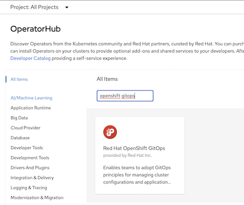
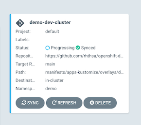
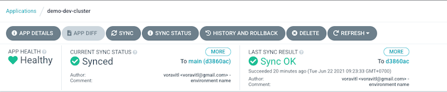
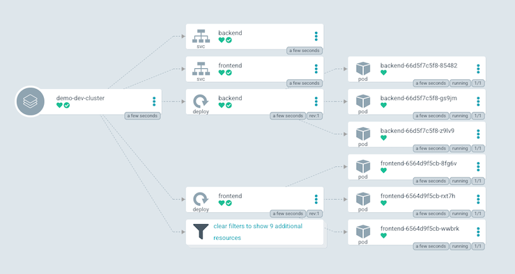
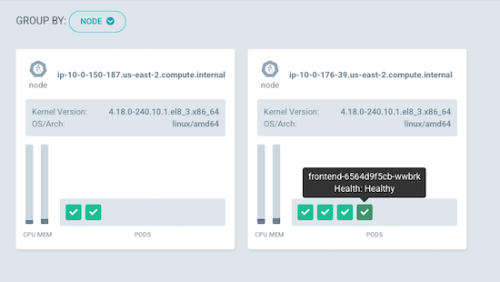

OpenShift GitOps
GitOps Operator
Install OpenShift GitOps Operator

Wait for few minutes. Check ArgoCD's pods in openshift-gitops namespace
oc get pods -n openshift-gitopsOutput
NAME READY STATUS RESTARTS AGE cluster-d469b8c87-hj4td 1/1 Running 0 68s kam-6976788946-fdhfd 1/1 Running 0 68s openshift-gitops-application-controller-0 1/1 Running 0 66s openshift-gitops-applicationset-controller-66db7bd58c-mfp4v 1/1 Running 0 66s openshift-gitops-dex-server-8bd64f9f7-c5lt4 1/1 Running 0 65s openshift-gitops-redis-7867d74fb4-6mnwk 1/1 Running 0 66s openshift-gitops-repo-server-55959654b4-t6jrh 1/1 Running 0 66s openshift-gitops-server-6776b46d54-czc89 1/1 Running 0 66sAccess ArgoCD Console.
Select Cluster Argo CD from top menu bar

By CLI
ARGOCD=$(oc get route/openshift-gitops-server -n openshift-gitops -o jsonpath='{.spec.host}') echo https://$ARGOCD
Notice that ArgoCD route is passtrough.
Extract password from secret
PASSWORD=$(oc extract secret/openshift-gitops-cluster -n openshift-gitops --to=-) 2>/dev/null echo $PASSWORD
Install argocd cli. For OSX use brew
brew install argocd
ArgoCD CLI
- login to argocd
Outputargocd login $ARGOCD --insecure \ --username admin \ --password $PASSWORD'admin:login' logged in successfully Context 'openshift-gitops-server-openshift-gitops.apps.cluster-0e2b.0e2b.sandbox563.opentlc.com' updated Use oc or kubectl CLI to login to target cluster and rename context
Remark: In this demo, Target cluster is the same cluster as ArgoCD cluster. If target cluster is another cluster then use oc command to login to target cluster first.
oc config rename-context $(oc config current-context) dev-clusterOutput
Context "default/api-cluster-0e2b-0e2b-sandbox563-opentlc-com:6443/opentlc-mgr" renamed to "dev-cluster".
Add Cluster
Use argocd CLI to add current cluster to be managed by ArgoCD
argocd cluster add dev-clusterOutput
INFO[0001] ServiceAccount "argocd-manager" already exists in namespace "kube-system" INFO[0001] ClusterRole "argocd-manager-role" updated INFO[0002] ClusterRoleBinding "argocd-manager-role-binding" updated Cluster 'https://api.cluster-0e2b.0e2b.sandbox563.opentlc.com:6443' added
ArcoCD Applications
Frontend/Backend App
Create application demo-dev-cluster
oc apply -f manifests/gitops/applications/demo-dev-cluster.yamlOutput
application.argoproj.io/demo-dev-cluster createdCheck application demo-dev-cluster status
oc get application -n openshift-gitopsOutput
NAME SYNC STATUS HEALTH STATUS demo-dev-cluster Synced Healthydemo-dev-cluster use kustomize and configured to manifests/apps-kustomize/overlyas/dev
manifests/apps-kustomize ├── base │ ├── backend-service.yaml │ ├── backend.yaml │ ├── demo-rolebinding.yaml │ ├── frontend-service.yaml │ ├── frontend.yaml │ ├── kustomization.yaml │ ├── namespace.yaml │ └── route.yaml └── overlays ├── dev │ ├── backend.yaml │ ├── frontend.yaml │ └── kustomization.yaml └── prod ├── backend.yaml ├── frontend.yaml └── kustomization.yaml
Todo App
Order of operation sync by ArgoCD can be managed by Phase and Wave
Phase and Sync-Wave
| Phase | Sync-Wave | Object |
|---|---|---|
| PreSync | -1 | Secret |
| PreSync | 1 | pvc for todo-db |
| PreSync | 1 | todo-db deployment |
| Pre-ync | 2 | todo-db service |
| Sync | 1 | todo deployment |
| Sync | 2 | todo service |
| Sync | 3 | todo route |
| PostSync | 1 | todo service monitor |
todo-dev-cluster is ordered by todo-db, todo app and service montioring.
Create application todo-dev-cluster
oc apply -f manifests/gitops/applications/todo-dev-cluster.yamlCheck for Hook and Wave in
Todo Database todo-db.yaml
- Secret sync-wave -1
- PVC and Deployment sync-wave 1
annotations: argocd.argoproj.io/hook: PreSync argocd.argoproj.io/sync-wave: "1"Todo App todo.yaml
annotations: argocd.argoproj.io/hook: Sync argocd.argoproj.io/sync-wave: "1"
ArgoCD Web Console
Walkthrough ArgoCD console
Open ArgoCD URL

Application status
Overall

Reference to git commit

Application topology

Node topology

Pod's log